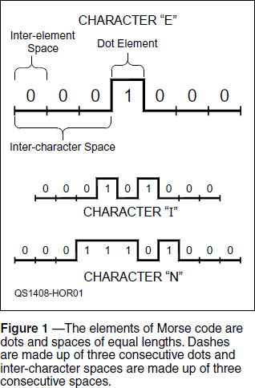
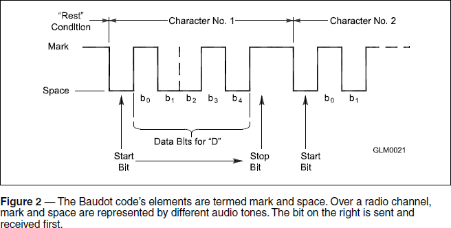
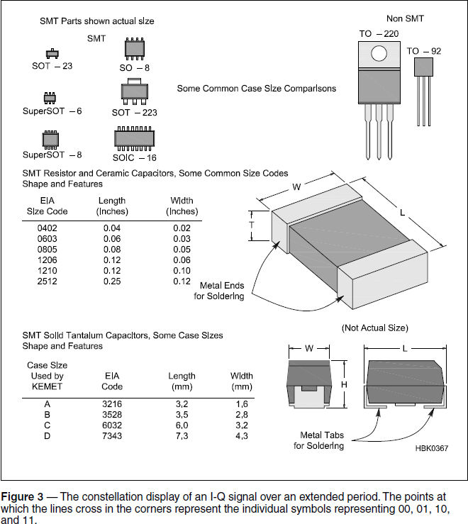

Experiment #139 — Digital Code Basics
While tuning the bands, I’ve become more and more fascinated by the sheer variety of “digital” signals I encounter. Ever since the FCC allowed amateurs to develop their own protocols and codes in the early 1990s, we have seen an explosion of amateur digital innovation. The Fldigi software includes support for more than 30 digital modes, along with numerous variations on the protocols and modulations. WSJT, originally developed for VHF meteor scatter, is now a full suite of protocols. PACTOR and WINMOR are pushing the boundaries of digital data transfer over the very difficult HF channel. For voice communication, CODEC2 is now a fully-capable digital voice protocol. More are on the way as amateurs put the processing power of the modern PC to work, even copying that most venerable of all digital modes, CW!
Regardless of whether you are a phone, CW, or digital fan (or all three!) it’s important to understand the basics of modern digital technology. There are certain bits of vocabulary that describe the data stream that underlies wireless data. This column will grapple with a few.
Bits of Data
Let’s start with that most elementary of digital concepts — the bit. This is the 1-or-0 information element from which all other data is constructed. When using CW, RTTY, or PSK31, bits are what you hear being transmitted, either as a tone or as the presence of a carrier.
As you can see from Figure 1, the Morse code character for E is seven bits long — three 0 bits, a single 1 bit, and a concluding three 0 bits! Morse code is composed of two fundamental elements: the dot (labeled 1 in the figure) and the inter-element space (labeled 0 in the figure). Dashes are composed of three dot elements with no intervening space and the inter-character space is composed of three inter-element spaces.

The bits are assembled into characters on the receiving end by the human operator in the case of CW or by software in the case of RTTY or PSK31. The decoding process also requires some information about when a character’s-worth of bits begins and ends, so framing bits are added. In the case of Morse code (CW), the framing bits are actually the inter-element spaces: three inter-element spaces in a row means a character has just finished or is just about to start. Don’t discount the value of framing bits — if you’ve ever tried to copy CW with spaces that are too short, you know how important framing bits are!
Know the Codes
Amateurs refer to Morse as “the code” but there are really lots of codes in the digital world. In this sense, a code is simply a method of representing characters as a pattern of bits. To encode a character means to turn it into its proper bit pattern and to decode it means to turn the pattern of bits back into the character. There may be additional codes operating on the characters such as compression (like a ZIP file) or abbreviations (like Q signals) but at the basic level all we’re talking about is the rules for turning whatever represents 1s and 0s into characters and vice versa.
Morse and PSK31 are somewhat unusual in that the required number of bits to send a character varies from character to character. Not including the framing bits or prosigns, Morse code requires 1 bit for its shortest character (E) and several characters require 19 bits. These are examples of Huffman codes, in which the length of the individual characters are controlled to improve the rate at which information can be transmitted.
Most other codes are fixed-length, such as RTTY’s Baudot code (named for its inventor, Emile Baudot) and the common computer character code, ASCII. Figure 2 shows how a character is constructed from mark and space elements in the Baudot code. Each Baudot character consists of five consecutive bits with no intervening elements.

Baudot has two framing bits: a start bit, which consists of one bit period of the space element and a stop bit, which consists of at least one bit period of the mark element. Stop bits can be configured to have a minimum length of 1, 1.5, or 2 bit periods so that the decoder functions properly.
ASCII characters can have 7- or 8-character data bits plus the start and stop bits. A parity bit can also be added to indicate whether there are an even or odd number of bits set to 1 in the character. This is a very simple method of error detection — the number of 1 bits in the character are counted and if the count and the parity bit do not agree, there was an error in that character. ASCII (and the extended 16-bit Unicode) character sets are used in digital communication that is not conducted via RTTY or PSK31.
Symbols and Bits
One of the more important measurements or specifications of a digital communication channel is its bit rate. In Morse code, RTTY, and PSK31, during the period when one bit is sent you would hear the pattern or tone for a 1 or a 0. The reciprocal of that period is the bit rate, given in bit/s or bps. For example, if the period for one bit is 1 msec, the channel’s bit rate is the reciprocal of 1 / 1 msec = 1000 bps. Take care not to confuse bit/s with byte/s!
Some methods of encoding data into transmittable (and receivable) signals are not restricted to sending only one bit at a time. For example, if the transmitted signal consisted of two tones, each corresponding to a 1 or a 0, then during each bit period four different combinations of two bits could be sent: 00, 01, 10, or 11. Each of these combinations is called a symbol and the rate at which different combinations are sent is called the symbol rate. In this example, if the symbol rate was 300 symbols per second, the bit rate would be 2 × 300 = 600 bps.
In honor of Baudot, symbol rate is measured in units of baud with 1 baud = 1 symbol / second. Thus, one does not say “baud rate,” because baud is already a rate — there is no need to say “symbol rate rate.” Just “baud” or “bauds” will do.
Packaging more than one bit into a symbol is common, and amateurs have been experimenting with protocols that use up to 63 different tones (MT63) to send an entire character during one symbol period. This speeds up data transmission at the expense of a wider signal bandwidth and requiring more sophisticated data coding and decoding equipment and software.
One of the more popular modulation methods to transmit symbols representing multiple bits is called quadrature amplitude modulation or QAM. In this method, two carriers are transmitted with a 90° phase shift between them. One is called the I signal and the other is the Q signal. They are turned on and off in various combinations to represent 00, 01, 10, and 11.1 The four combinations are plotted on a graph shown in Figure 3, which is called a constellation display. (QAM and the similar QPSK are well-suited to digital signal processing techniques. Advanced modulation schemes having up to 256 different symbols have been used!)

Figure 3 shows how the received signal moves from point to point in the constellation. When the signal reaches any of the four points, the receiving decoder generates the combination of 1s and 0s represented by that point. Variations in the trajectories between each of the four corner points are caused by noise and non-linearities in modulation circuits. The “fuzzier” the constellation display, the harder it is for the receiving decoder to make correct decisions about which symbol was actually transmitted.
In order to help the receiver operate better under adverse conditions, further coding schemes such as Viterbi encoding place restrictions on which codes can be transmitted in sequence. This reduces the number of possibilities the receiving decoder must consider and so makes it easier to reject noise and distortion.
Finally we get to what really matters to a communication system user — data transfer rate. Measured in bytes / second, data transfer rate describes the ability of the entire system to move data from end to end and includes the slowing-down effect of the extra bits sent with each character, characters added to create packets or other structures, protocol timing delays, and so forth. It also includes the speeding-up effect of multiple bits per symbol. Generally speaking, data transfer rates in most systems are anywhere from 1⁄2 to 1⁄10 of the system’s bit rate.
Fielding a Recommendation
Readers of Hands-On Radio may remember a few columns that addressed the early experiments establishing the link between electricity and magnetism.2 Recently, I discovered a terrific book that takes the subject further — to the electromagnetic field. Faraday, Maxwell, and the Electro- magnetic Field: How Two Men Revolu-tionized Physics, by Nancy Forbes and Basil Mahon explains very well how the idea of a “field” grew out of Faraday’s discoveries and suggestions to be given its mathematical description by Maxwell. Not only is it an interesting tale of technical history but using minimal math, it provides some good background on what a field is — a hard thing to understand clearly as one begins learning about radio.
Notes
1I-Q modulation was discussed in Experiment 128. All previous Hands-On Radio experiments are available to ARRL members at www.arrl.org/hands-on-radio.
2Experiments 117 and 118, “Laying Down the Laws.”